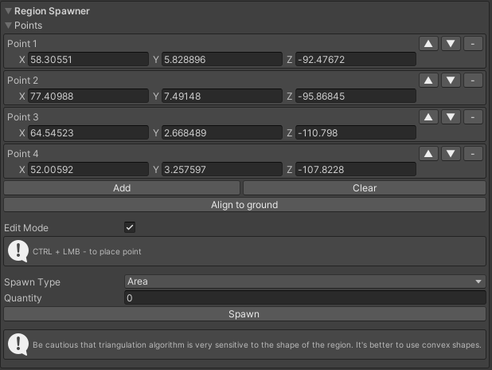

Prefab Drawer v1.0 Manual
emil-is@yandex.ru
API Reference: https://mufalder.github.io/prefabDrawerApi
Prefab Drawer allows you to easily draw with prefabs to populate your levels and make them beautiful like never before. The tool has many settings to suit any need.
Main Window
To open the Prefab Drawer, locate the “Tools/NorthLab/Prefab Drawer” in the top menu of the Unity.
After that, you will be greeted with the small window with six different modules. Every module has its purpose and settings.
Prefabs
In this module you configure individual prefabs. Also there are settings for the positional offsets, random rotation, scale and surface filters. Keep in mind that you can override filters and offsets individually for every prefab.
- Weight - distribution weight in the random algorithm. Goes from 0 to 1. The higher value the more often prefab will be spawned.
- Override Offsets - override positional offsets, rotation and scaling for this prefab.
- Override Filters - override surface filters for this prefab.
- Toggle - on the right side there is a toggle. It allows you to disable prefab for spawning without deleting it from the list. BE AWARE THAT BY DEFAULT ITS DISABLED.
- Add - add new prefab to the list.
- Clear - clear the prefab list.
- Check All - check all prefabs for the spawning.
- Uncheck All - uncheck all prefabs for the spawning.

- Position Offset - positional offset of the prefabs.
- Random Rotation - random rotation for the prefabs. Random calculates every angle from 0 to the input value. (Example: in the picture, the input value of the Y axis is 360, so it means that prefabs will randomly rotate on Y axis from 0 to 360 degrees.)
- Random Scale - random scale of the prefabs. From min to max.
- Slope - enable surface’s slope filter.
- Max Slope - max possible slope angle for the spawning.
- Height - enable Y position filter. It will restrict prefabs for spawning outside of the min-max Y range.
Brush
This module contains settings for the brush.
- Brush Size - brush radius in the meters.
- Spacing - distance between brush strokes.
- Flow - will prefabs follow the brush stroke direction?
- Flow Axis - which prefab direction will align with the brush stroke.
Drawing
This module controls the drawing process.
- Layer Mask - on which layers drawing will apply.
- Check Tag - on which tag drawing will apply.
- Tag - target tag.
- Invert - inverts the tag filtering.
- Click Drawing - drawing will occur only on mouse up event ignoring the mouse drag.
- Number Of Instances - how many prefabs will be spawned with one click.
- Align to Normal - align prefabs to the surface normal.
- Align Scale - how strong prefabs will align to the surface.
- Parent - assign all prefabs to this object.
- Drawing - enable drawing. To draw objects you need to hold Left Control and press Left Mouse Button.
When drawing is enabled you will see the brush in the scene view.

Region Spawner

This module allows you to spawn prefabs within the specified area or on its perimeter.
- Points - points of the area.
- Edit Mode - allows you to place points directly in the scene view. (Raycast algorithm will grab the layer mask setting from the Drawing module.)
- Spawn Type - how to spawn prefabs? Inside of the area or on its perimeter.
- Quantity(Area) - how many prefabs will be spawned.
- Spacing(Perimeter) - spacing between the objects.
Points displayed in the scene view
Difference between the area and perimeter spawning.
Disabler
With this module you can control the density of objects in the parent object(It grabs the parent objects from the Drawing module). For example, you made a huge and dense forest but unfortunately you are now faced with a big performance hit because of it. With this module you can change the quantity of objects and disable or delete them if necessary without having to manually pick every object. Also disabling is random, so every time you press “Disable” it will randomly choose which objects to disable to satisfy your needs. Neat isn't?
Presets
This module manages the presets. All presets located in the “Editor Default Resources” folder in the project (If this directory is not present, it will create it automatically). All presets have a *.drawerPreset format. Also Prefab Drawer will create an autosave preset when you close it.